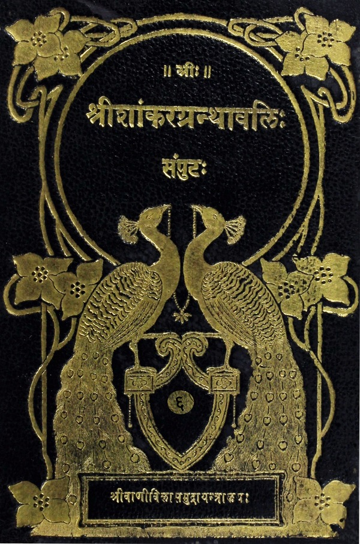

श्रीशांकरग्रन्थावलिः
संपुटाः १ - २०
Home
About
Concluding Note
T.K. Balasubrahmanyam
Superhuman efforts of a savant
Prema Nandakumar
Views on the Sri Vani Vilas Press
His (Sri TKB’s) aim
Volumes
तैत्तिरीयोपनिषद्भाष्यम्
शीक्षावल्ली
ब्रह्मनमस्काररूपमङ्गलम्
गुरुनमस्कारः चिकीर्षितग्रन्थनिर्देशः
उपोद्घातः
दुरितक्षयाद्यर्थनित्यकाम्यकर्मणां पूर्वकाण्डेऽधिगतत्वम् कर्मभ्योऽसंभाव्यमाननिःश्रेयसफलब्रह्मविद्यायाः सनिदानकर्मोन्मूलनार्थायाः प्रारम्प्रस्तावः
मुमुक्षोरागामिशरीरोत्पादकहेत्वभावादयत्नत एव मोक्षः, अथवा निरतिशयप्रीतिरूपस्वर्गस्य मोक्षादन्यत्रासंभवात्स्वर्गसाधनस्यैव मोक्षसाधनत्वम्, इति तदर्थं उपनिषदारम्भो व्यर्थ इति पूर्वपक्षः
विरुद्धफलोनेकसंचितकर्मसंभवाच्छरीरोत्पादहेत्वभावोऽसिद्ध इति प्रथमपक्षपरिहारः
संचितकर्मसंभवेऽपि तेषां नित्यकर्मभ्यः क्षय इति शङ्कायाः नित्यकर्मणामकरणनिमित्तप्रत्यवायपरिहारार्थत्वान्न संचितक्षयहेतुत्वमिति तदेकदेशिमतेनैव व्युदासः
नित्यस्य संचितक्षयहेतुत्वेऽपि न शुद्धकर्मक्षपयितृत्वमविरोधादित्यभिमतहानिः
असति विवेकबले काम्यकर्मवर्जनमशक्यमिति मुमुक्षोः काम्यकर्माप्रसक्तिरिति पक्षस्यासिद्धिः
अभावाद्भावोत्पत्तौ प्रमाणाभावान्न नित्यानामकरणनिमित्तप्रत्यवायपरिहारकत्वम्, अपि तु उपात्तदुरितक्षयज्ञापकं नित्यानामकरणम्, इति स्वमतप्रदर्शनपूर्वकमयत्नतो मोक्ष इति पक्षखण्डनोपसंहारः
स्वर्गसाधनस्यैव मोक्षसाधनत्वमिति पक्षमनूद्य मोक्षस्य नित्यत्वाभ्युपगमेन परिहारः
विद्यासहितकर्मणां नित्यारम्भसामर्थ्यमाशङ्क्य, विरोधात्तन्निरसनम्
प्रध्वंसाभावदृष्टान्तेन नित्यारम्भसंभवमुद्भाव्य, प्रध्वंसाभावस्य कार्यत्वमभ्युपगम्य तद्भिन्नत्वविशेषणेन व्युदासः
प्रध्वंसाभावस्य कार्यत्वं न संभवतीति सप्रपञ्चं समर्थनम्
विद्याकर्मकर्तृनित्यत्वात् साधनसांतत्येन साध्यसांतत्यशङ्कां कर्तृत्वस्यानुपरमे उपरमे वा अभिमतार्थासिद्ध्या समुन्मूल्य, परमात्मज्ञानादेव मोक्ष इति तदर्थमुपनिषदारम्भः साधुरेवेति वर्णनम्
उपनिषच्छब्दार्थव्युत्पादनम्
विद्याश्रवणधारणादीनामप्रतिबन्धाय अध्यात्मप्राणाद्यभिमानिमित्रादिदेवतानां सुखकृत्त्वप्रार्थनम्
ब्रह्म विविदिषुणा वाय्वाख्यब्रह्मविषयाणां नमस्कारवदनसंरक्षणप्रार्थनक्रियाणां ब्रह्मविद्योपसर्गशान्त्यर्थं करणम्
शान्तिः शान्तिरिति त्रिवारपाठस्त्रिविधविद्याप्राप्त्युपसर्गप्रशमनार्थः
अर्थज्ञानप्रधानोपनिषदि स्वरवर्णादिष्वप्रमादाय शीक्षाध्यायारम्भः
शीक्षाशब्दव्युत्पत्तिपुरःसरं तदर्थविवरणम्
शीक्षाध्यायस्थशिक्षितव्यविषयाः स्वरवर्णादयः
शिष्येण स्वस्याचार्यस्य च वक्ष्यमाणसंहितोपासनपरिज्ञाननिमित्तयशआदिप्रार्थनम्
`अथातः संहितायाः' इत्यत्राथातःशब्दार्थविवरणम्
लोकादिविषयाः पञ्च संहितोपासनाः
तासां महासंहितात्वव्युत्पादनम्
`अथाधिलोकम्' `अथाधिज्यौतिषम्' इत्यादावथशब्दस्य क्रमार्थत्वम्
संहितापूर्ववर्णादिषु पृथिव्यादिदृष्टिरिति लोकविषयसंहितोपासनप्रकारः
अस्य प्रकारस्य ज्योतिरादिविषयेषुपासनेषु समानत्वम्
अत्रत्यवेदेत्यस्योपासनार्थत्वप्रपञ्चनपुरःसरमुपासनशब्दार्थव्युत्पादनम्
प्रकृतोपासनफलविध्यर्थोपपादनम्
मेधाकामस्य `यश्छन्दसाम्' इत्यादिमन्त्रजपविधानं परंपरया विद्योपयोगार्थम्
ओंकारम् `यश्छन्दसामृषभः' इत्यादिना स्तुत्वा `स मेन्द्रः' इत्यादिना मेधादीनां प्रार्थनमिति मन्त्रार्थः
श्रीकामस्य `आवहन्ती वितन्वाना' इत्यादिमन्त्रैर्होमविधानम्
ओंकारं प्रत्येव `आवहन्ती वितन्वाना' इत्यादिना श्रीप्रभृतीनां प्रार्थनमिति मन्त्रार्थः
विद्याप्रकरणे श्रीकामाद्युपन्यासः परंपरया विद्योपयोगार्थः
वृत्तानुवादपूर्वकमुत्तरानुवाकस्य संबन्धकथनम्
मह इति चतुर्थव्याहृतौ माहाचमस्यविदितत्वपूर्वकं ब्रह्मदृष्टिविधानम्
लोकाद्यात्मकभूरादीतख्याहृतीनां महात्मकब्रह्मावयवत्वमुपपाद्य तासु एतल्लोकादिदृष्टिविधानम्
एकैकव्याहृतीनां चतुष्प्रकारमुपासनम्
वक्ष्यमाणानुवाकेनास्यैकवाक्यतामुपपाद्य हृदयान्तरुपलभ्यत्वमनोमयत्वादिविशिष्टब्रह्मण एतदुपासनमिति सूचनार्थत्वम् `स वेद ब्रह्म' इति संदर्भस्य
वृत्तानुवादपूर्वकमुत्तरानुवाकसंबन्धवर्णनम्
प्रकृतोपास्यब्रह्मणो यथावदुपलब्ध्यर्थमुपासनार्थं च स्थानविशेषप्रदर्शनपूर्वकस्वरूपप्रदर्शनम्
प्रतिपादितस्वरूपप्रतिपत्तये मार्गविशेषप्रदर्शनम्
उक्तमार्गेण प्रतिपन्नब्रह्मणः पुरुषस्य स्वाराज्यादिफलविशेषप्रदर्शनम्
अस्मिन्नुपासने आदरार्थम् `प्राचीनयोग्योपास्स्व' इत्याचार्योक्तिप्रदर्शनम्
प्रकृतस्य ब्रह्मणो हिरण्यगर्भस्य पृथिव्यादिपाङ्क्तरूपेणोपासनं तत्फलविशेषश्च
वृत्तानुवादपुरःसरमुत्तरानुवाकावतरणम्
शब्दमात्रविषयस्यापि ओंकारोपासनस्य प्रतिमादौ विष्ण्वाद्युपासनस्येव फलप्रदानसामर्थ्यसंभवः
ओंकारे ब्रह्मसादृश्यवर्णनपुरःसरं ब्रह्मदृष्टिविधानम्
`ओमित्येतदनुकृति...' इत्यादिना प्रकृतोंकारस्तुतिः
व्यवहितव्याहृत्यनुवाकेनोत्तरानुवाकसंबन्धकथनम्
केवलं विज्ञानेनैव स्वाराज्यादिफलस्योक्तत्वाच्छ्रौतस्मार्तकर्मणामानर्थक्यमाशङ्क्य तेषामपि पुरुषार्थं प्रति साधनत्वसत्त्वात्तान्यवश्यानुष्ठेयानि
पुनः पुनः `स्वाध्यायप्रवचने च' इति ग्रहणस्य तयोर्यत्नत अनुष्ठेयत्वशिद्धिदर्शनम्
उक्तानामपि सत्यतपःप्रभृतीनामादरार्थं रायीतराद्याचार्यग्रहणेन प्रदर्शनम्
`अहं वृक्षस्य' इत्यादिमन्त्रस्य ब्रह्मविद्याप्राप्त्यर्थं जपार्थत्वेन विधानम्
अस्य मन्त्रस्य ब्रह्मविदो ब्रह्मभूतस्य त्रिशङ्कुमहर्षेर्वेदानुवचनत्वप्रदर्शनम्
वेदग्रहणानन्तरमाचार्येण शिष्यं प्रत्यनुशासनात्पूर्वोपचितदुरितक्षयद्वारेणावश्यानुष्ठेयानि नित्यनैमित्तिकानीत्युत्तरानुवाकतात्पर्यार्थः
`सत्यं वद' इत्याद्यनुष्ठेयधर्माणां प्रपञ्चनम्
आचार्येषु विद्यमानसुचरितानामेव ग्रहणं न तद्भिन्नानामित्याद्युपन्यासः
उक्तोपदेशस्य वेदरहस्यार्थत्वादिप्रतिपादनम्
उक्तोपनिषत्सिद्धान्तितार्थं विचारमुखेन दृढीकर्तुं विचारारम्भः
विदुष एव कर्मस्वधिकारदर्शनात्कर्मभ्य एव केवलेभ्यो मोक्ष इति पक्षमुद्भाव्य, नित्यत्वान्मोक्षस्य कर्माङ्गज्ञानस्य ब्रह्मविद्यायाश्चात्यन्तविलक्षणत्वादित्यादियुक्तिभिस्तद्व्यपोहः
विद्योपसर्जनेभ्यः कर्मभ्यः स्यान्मोक्ष इति पक्षमुत्थाप्य नित्यस्यारभ्यत्वानुपपत्तिरिति तन्निरसनम्
विद्याकर्मणोः समुच्चितयोः स्यान्मोक्षसाधनत्वमिति शङ्कामुद्भाव्य विरुद्धधर्मवत्कर्तृकयोस्तयोः समुच्चयासंभव इत्यादियुक्तिभिस्तन्निरसनम्
कर्मबोधकश्रुतीनां गतिप्रदर्शनम्
कर्मोपसर्जनविद्यातः मोक्ष इत्याशङ्क्य विरोधादियुक्तिभिस्तद्व्युदासः
कर्मणामुपयोगप्रदर्शनम्
गृहस्थेतराश्रमाणामानर्थक्यमाशङ्क्य इतराश्रमप्रसिद्धब्रह्मचर्यादिश्रवणानुरोधेन तेषामपि विद्यायां परंपरयोपयोग इत्यादियुक्तिभिस्तत्सार्थक्यम्
श्रुतीनां कर्मस्वधिकयत्नस्य प्रयोजनप्रदर्शनम्
केवलविद्ययैव परं श्रेय इत्युपसंहारः
अतीतविद्याप्राप्त्युपसर्गप्रशमनार्थमुत्तरशान्तिपाठस्तदर्थस्य च व्याख्यातत्वम्
ब्रह्मानन्दवल्ली
शिष्यस्य वक्ष्यमाणपरविद्याविध्नप्रशमनाय स्वस्याचार्यस्य च सामर्थ्यादिप्रार्थनम्
वृत्तानुवादपूर्वकं ब्रह्मानन्दवल्लीतात्पर्यार्थस्य संक्षेपेण कथनम्
परविद्याश्रवणादिप्रवृत्तिसिद्ध्यर्थं परविद्याया अज्ञाननिवृत्तिः प्रयोजनमिति सप्रपञ्चं प्रदर्शनम्
वक्ष्यमाणलक्षणं ब्रह्म यो वेत्ति तस्य परब्रह्मप्राप्तिरिति सूत्ररूपप्रथमवाक्यार्थप्रदर्शनम्
आप्नोतिशब्दस्य मुख्यार्थपरिग्रहे बाधकमुपन्यास्य दर्शनार्थत्वाङ्गीकारेण प्रकृतवाक्यार्थस्य सदृष्टान्तमुपन्यासः
प्रथमवाक्येन सूत्रितस्यानिर्धारितस्वरूपविशेषब्रह्मणो लक्षणादिप्रदर्शनार्थ उत्तरसंदर्भ इत्यवतारणम्
`सत्यं ज्ञानम्' इति सत्यादिपदानामेकविभक्त्यन्तत्वेन विशेषणविशेष्यभावावगमाद्वेद्यब्रह्मविशेषणार्थत्वप्रदर्शनम्
एकस्मिन्वस्तुनि विशेषणान्तरायोगात्कथमेषां विशेषणविशेष्यभाव इत्याक्षिप्य लक्षणार्थत्वादेषां पदानां लक्षणविशेषणयोश्च वैलक्षण्यादिति तत्समाधानम्
पुनर्विशेषणविशेष्यभावपक्षमवलम्ब्य सत्यादिपदार्थव्याख्यानपूर्वकं तेषां पदानां प्रत्येकं व्यवच्छेद्यप्रदर्शनम्
`नान्यद्विजानाति' इति विशेषप्रतिषेधात्स्वात्मज्ञातृत्वमुपक्षिप्य ब्रह्मणोऽपि ज्ञेयत्वे ज्ञात्रन्तराभावप्रसङ्गादिभिस्तन्निरस्य ज्ञानशब्दस्य भावव्युत्पत्तिकत्वसमर्थनम्
सत्यादिपदानां व्यावृत्त्यर्थत्वे ब्रह्मणश्चाप्रसिद्धत्वाच्छून्यार्थमेव सत्यादिवाक्यमित्याशङ्क्यैषां पदानां स्वार्थसमर्पणद्वारैव व्यावृत्त्यर्थत्वाद्ब्रह्मशब्दस्य च स्वार्थेनैवार्थवत्त्वादिति तत्परिहारः
ब्रह्मात्मैक्ये शास्त्रतात्पर्यमुक्त्वा तदा आत्मनो ज्ञातृत्वप्रसिद्ध्या ज्ञानपदस्य भावव्युत्पत्तिकत्वहान्याशङ्कापूर्वकमैपाधिकमेव ज्ञातृत्वमित्यादिना तत्समर्थनम्
ज्ञानस्य नित्यत्वेऽपि सर्वज्ञत्वोपपत्तिसमर्थनम्
सत्यज्ञानादिशब्दानां लक्षणावृत्त्या ब्रह्मलक्षकत्वोपन्यासः
व्याख्यातस्य ब्रह्मणः हार्दाकाशस्थितगुहायां वेदनप्रकारमुक्त्वा तस्य वेदितुर्ब्रह्मभूतस्य सर्वज्ञब्रह्मस्वरूपेण युगपत्सर्वकामानुभवः, इत्युपचारोक्त्या अद्वितीयस्वात्मानन्दानुभवरूपफलप्रदर्शनम्
`तस्माद्वा' इत्याद्युत्तरग्रन्थावतारणाय वृत्तानुवादपुरःसरमनन्तपदार्थभूतत्रिविधपरिच्छेदराहित्यस्य वक्ष्यमाणसृष्टिवाक्यतात्पर्यविषयस्य सप्रपञ्चं प्रदर्शनम्
`तस्माद्वा' इत्यादिसृष्टिवाक्यस्य पदशः अर्थविवरणम्
`स वा एष पुरुषः' इति पुरुषग्रहणस्य तात्पर्यविवरणम्
तस्य च पुरुषस्य विद्यायान्तरतमब्रह्मसंक्रमणस्येह विवक्षितत्वाद्बाह्मविशेषेषु प्रतिपन्नात्मभावस्य झटित्यान्तरतमप्रवर्तनमशक्यमिति प्रतिपत्तिसौकर्याय कोशपञ्चकोपन्यास इति तात्पर्यवर्णनम्
प्राथमिकान्नमयकोशमुपन्यस्य तस्य सर्वभूतकारणत्वादिलिङ्गप्रदर्शनपूर्वकमन्नं ब्रह्मेति विजानतः सर्वान्नप्राप्तिफलप्रदर्शनम्
एवमन्नमयादभ्यन्तरप्राणमयकोशोपन्यासः
एवं क्रमेण मनोमयादिकोशोपन्यासः
तत्तोऽप्यभ्यन्तरस्यानन्दमयकोशस्याब्रह्मत्वं सप्रपञ्चमुक्त्वा तदीयपुच्छमिव प्रतिपाद्यमानस्य ब्रह्मणः प्रकृतस्येह प्राधान्येन प्रतिपादनम्
ब्रह्मणोऽसत्त्वशङ्कामुद्भाव्यासद्रूपेण वेदननिरसनपूर्वकं सदिति प्रतिपत्तव्यत्वम्
किं विद्वानेव ब्रह्म प्राप्नोति, उताविद्वानपीत्यादिप्रश्नप्रदर्शनपूर्वकं तत्समाधानतया ब्रह्म सद्रूपमेवेत्यादिप्रदर्शनम्
ब्रह्मणोऽचेतनत्वशङ्काव्यावृत्त्यर्थं स्वतन्त्रकामयितृत्वोपन्यासपूर्वकजगत्सृष्ट्युपन्यासः
प्रवेशवाक्यस्य तात्पर्यं दर्शयितुं विस्तरेण विचारमुपक्रम्य मतान्तरप्रदर्शनपुरःसरं प्रकृतान्तःकरणगुहानिहितत्वमेव प्रवेश इति समर्थनम्
मूर्तामूर्तसर्वविकारजातं सदात्मकं ब्रह्माभवदिति प्रदर्श्य सद्रूपमेव ब्रह्मोति प्रकृतप्रश्नप्रतिवचनत्वेन निगमनम्
ब्रह्मणः सुकृतत्वरसरूपत्वादिनास्तित्वप्रदर्शनम्
वातादीनां स्वस्वकार्येषु भयपूर्वकनियतप्रवृत्त्या तत्प्रवर्तकत्वाद्ब्रह्मास्तित्वम्
साधनसंपत्तिनिमित्तस्य सार्वभौमानन्दप्रभृतिहिरण्यगर्भानन्दपर्यन्तस्यानन्दस्योत्तरोत्तरोत्कर्षप्रतिपादनेन ब्रह्मानन्दस्य निरतिशयसर्वोत्कृष्टत्वप्रतिपादनम्
उपक्रान्तब्रह्मात्मैक्यस्योपसंहारः
विद्वदविदुषोः प्राप्त्यप्राप्तिविषयप्रश्नव्याख्यारम्भः
सप्रपञ्चमुपसंक्रमणशब्दार्थविचारपूर्वकं ब्रह्मस्वरूपविज्ञानमेवोपसंक्रमणमिति समर्थनम्
वाङ्मनसागोचरब्रह्मविज्ञानवतः कुतश्चन भयाभाव इति प्रकरणार्थसंक्षेपः
पुण्याकरणपापक्रिये अविदुष इव विद्वांशं न तपत इति प्रदर्शनम्
ब्रह्मानन्दवल्ल्यर्थोपसंहारः
भृगुवल्ली
वृत्तानुवादपूर्वकमुत्तरवल्लीसंबन्धकथनम्
ब्रह्मजिज्ञासुना भृगुणा पृष्टेन वरुणेन ब्रह्मोपलब्धिसाधनान्नादीनां ब्रह्मलक्षणस्य ब्रह्मणः प्रतिपत्तव्यत्वस्य च उपदेशः
एवमुपदिष्टस्य भृगोस्तपोऽनुष्ठानमहिम्नान्नं ब्रह्मेति ज्ञानमुपदिश्य पुनः पितरमागत्य प्रष्टुः तपसैव ब्रह्म विजिज्ञासस्वेति प्रतिवचनम्
एवं क्रमेण भृगोस्तपसैव ब्रह्मज्ञानसंपत्त्या ब्रह्मजिज्ञासोस्तपसोऽवश्यानुष्ठेयत्वम्
एवमुपदिष्टब्रह्मविद्याया ब्रह्मभावापत्त्यादिफलम्
साधकस्यानुष्ठानार्थं ब्रह्मविदो नियममभिधायान्नान्नादरूपेण प्राणाद्युपासनं तत्फलं च
पृथिव्याकाशोपासकस्य बह्वन्नसंग्रहमुक्त्वान्नदानस्य माहात्म्यकथनम्
वागादिषु ब्रह्मोपासनानि तत्फलानि च
एवमध्यारोपमुक्त्वा श्रुत्युपपत्त्यादिना ब्रह्मणोऽसंसारित्वमेकत्वं चेत्यपवादप्रदर्शनम्
ब्रह्मैकत्वविज्ञानवतोऽन्नमयादिक्रमेणानन्दमयोपसंक्रमणपूर्वकं ब्रह्मज्ञानफलीभूतकृतार्थताख्यापनाय सर्वात्मकब्रह्मरूपसामगानप्रदर्शनम्
वल्लीद्वयतात्पर्यार्थनिगमनम्

तैत्तिरीयोपनिषद्भाष्यम्
(Taittiriyopanishad Bhashya)